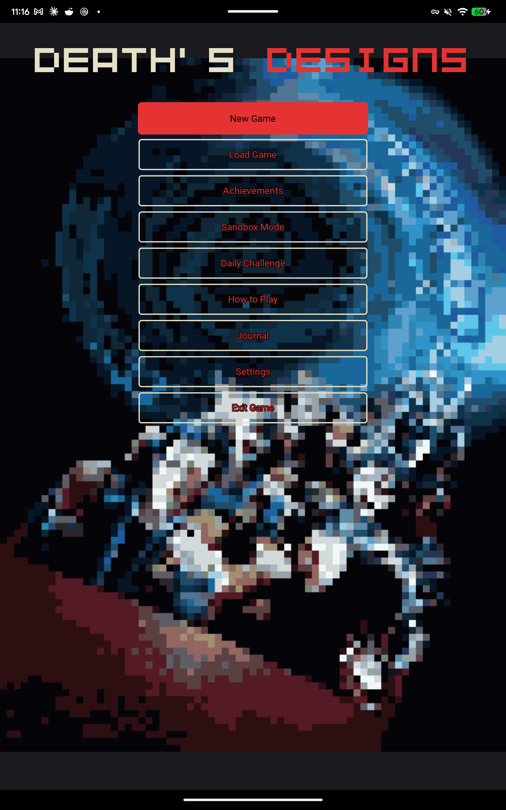
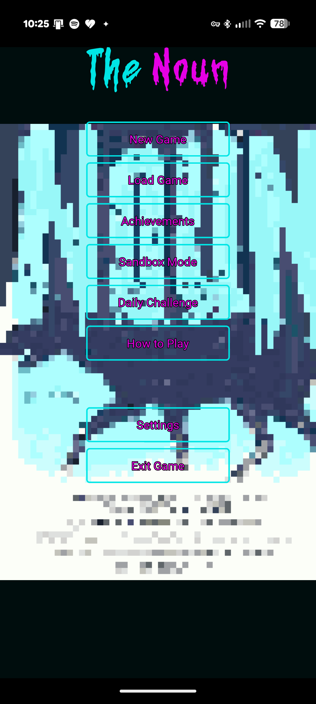
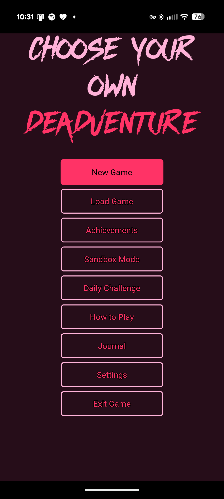
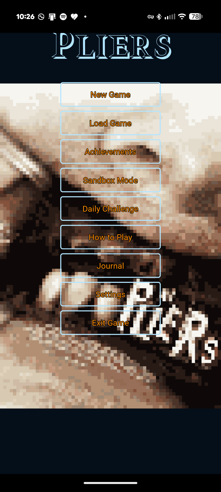
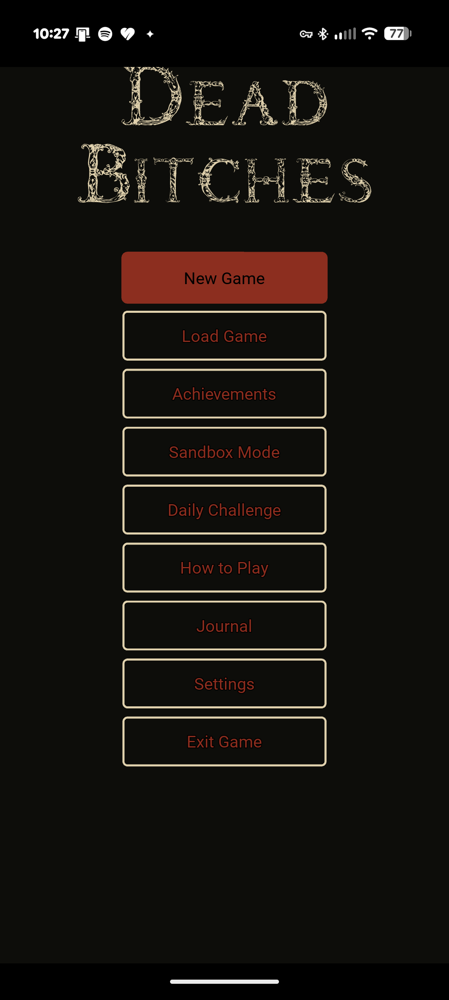
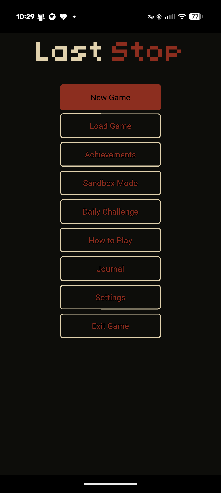

Games
Six games for the price of none
(hopefully only for now, though!)
As functions piled up, the need to refactor turned one script into a main.py entry point with several dedicated engines for major function groups. A hazard engine was created to handle environmental dangers, the need for danger reactivity led to the integration of a QTE engine, and so on until the project had grown into a full-fledged game-agnostic engine with bootstrapping, assets, animation and audio, JSON game data for SIX games I am also developing, data verification on init, debugging logs and more!

What would you do to get off of Death's List? Do you believe a stranger's vision? A bridge collapsing, an escalator turning into a meat grinder, whatever catastrophe the shuffled deck deals that round.Disrupt the design by helping people escape, letting the chaos unfold, or walking away entirely. Now Death is correcting it, one name at a time, and you're the only one who ever saw it coming.

Among Us with a twist. An Antarctic research outpost, cut off for the season, twelve people who all know each other ..or so they think. Something arrived with a helicopter crash, and it can wear a face perfectly enough that even the people who see it every day can't tell. Investigate, run tests, confront people you have to keep working alongside no matter what you suspect. If you keep getting it wrong, you'll tank your reputation and risk handing the thing your whole crew.
Simple actions, complex consequences A true branching-node adventure, not a linear game with the occasional fork — every scene is a real decision point, and every decision can save someone or cost them. Death's shuffled a kill order for your friend group behind the scenes, and the only warning is a phone call you can choose to ignore.
The Saw-knockoff. The Sawkoff. You wake up not knowing where you are, accused of something by a faceless voice. Before you've even seen the room, an opening quiz, answered under duress, decides what you did and how guilty you actually are.Everything downstream traces back to those answers: the hazards Needlenose builds for you, how the other four captives treat you, and the exact shape of the trap waiting at the end. He calls the whole apparatus The Vise. Nobody in it got there by accident, including you.

Nightmare on Elm Street-inspired Nonsense A fifteen-member high-school roster gets picked off across one very bad week by Frederick, who doesn't need a weapon or an open door: he attacks through dreams.Fall asleep and you're vulnerable. Stay awake too long and you're a wreck. Everyone you know is on the same clock, counting down to a Friday night nobody sleeps through.

Is it a prequel, a sequel ..or both? A linear story set years before Death's Designs. Somebody else had the vision: a stranger who may not even be alive. Now you're collateral damage in a plan that might already have taken itself to the grave.